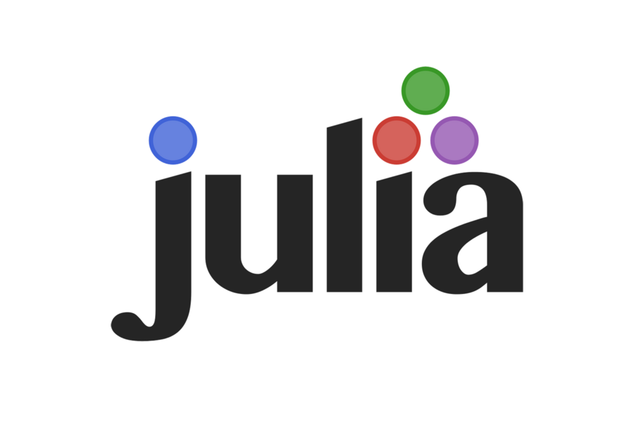

print("Hello World!")Hello World!Applied Optimization with Julia

To prepare for the upcoming lectures, we start by installing the Julia Programming Language and an Integrated Development Environment (IDE) to work with Julia.

. . .
If you are ever asked to add something to your “PATH”, do so!
print("Hello World!")Hello World!Hello World! → perfect!Don’t worry if it is not running right away. We will fix this together!
.ipynb filesJupyter on the right. . .
You can also copy and paste code from the notebooks into your IDE!
julia in the terminal] to open the package manageradd IJuliaEnterusing IJulia; notebook(). . .
You can also run the notebooks in VS Code, if you prefer!
. . .
Don’t forget to save your notebook before uploading it to OpenOlat!
. . .
The assignments are not mandatory, but highly recommended!
. . .
And that’s it for this lecture!
The remaining time we will already start working on the first problems.
Lauwens, B., & Downey, A. B. (2019). Think Julia: How to think like a computer scientist (First edition). O’Reilly®. Link to the free book website.
For more interesting literature to learn more about Julia, take a look at the literature list of this course.